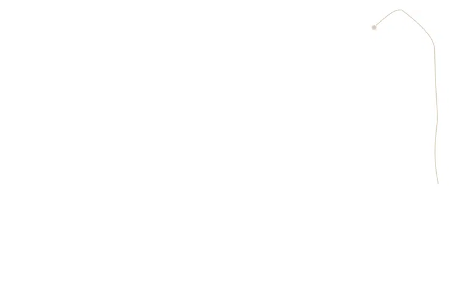

Reinforcement learning · Simulation · Rust · 2026
Autonomous FPV racing
A racing-drone simulator rewritten in Rust from recorded flights, and a reinforcement-learning pilot trained in it that then flies the real race.

1–3%lap-time error of the simulator against real flights
0.17–0.54 mposition error 1 s ahead, on flights it never saw
51.1 → 13.8 sbest lap: scripted controller → RL policy
3 / 3laps valid, no contacts, reproduced on 3 flights
The problem
Training a racing pilot by trial and error needs millions of crashes. That is only possible in a simulator, and a policy trained in a simulator only flies well if the simulator is faithful.
How it works
- Flightstelemetry recorded from real flights
- Physicsthrust, drag and rotation identified from data
- Residualsmall network for what the equations miss
- SimulatorRust, thousands of parallel environments, Python bindings
- PolicyPPO with randomized physics and full races
- Real racepolicy flies the game in real time
What made it transfer
- Validated by trajectory, out of sample. Every version of the physics was judged on whole flights it had not been fitted to, by how far the predicted path drifts after one second.
- A small residual network on top of the identified physics closes most of the remaining gap.
- Training for robustness, not for the simulator. Full races with battery sag, a safety margin around obstacles and randomized physics; a separate robust evaluation picks the policy that flies.
- Negative results kept. Correcting rotation with the network made trajectories worse; spreading battery over the race gained under 0.3 s. Both were measured and dropped.
About the data. Only our own simulator, training code and flight data are shown. Nothing from the game itself is published.